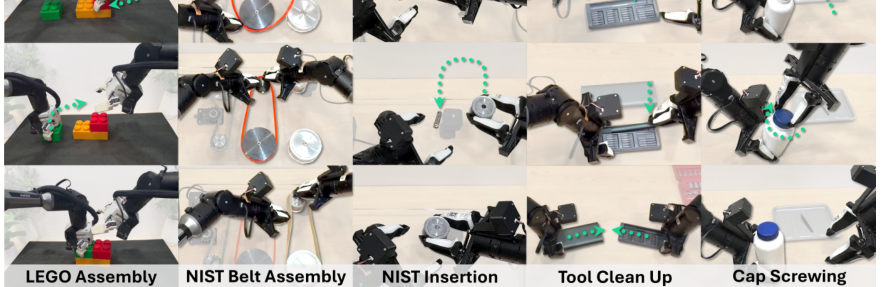
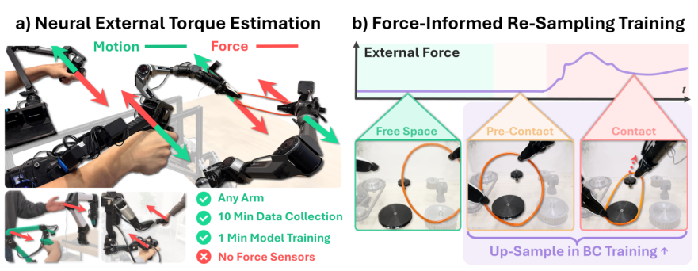
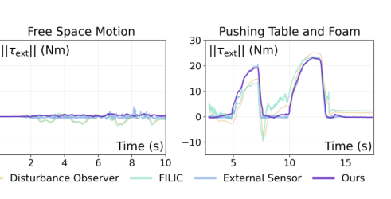
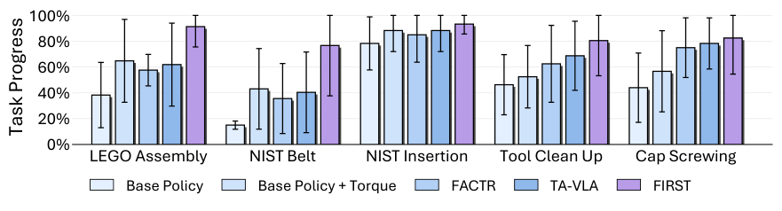

Background & Motivation
接觸密集的操作(插入、鎖螺絲、變形物體)需要力覺,但大多數廉價機械臂沒有力感測器。本文提出兩件互補的東西:NEXT——只吃 10 分鐘無接觸軌跡、訓練 1 分鐘的 LSTM,靠「量測馬達力矩 − 學到的自由空間力矩」的殘差來估外部關節力矩,不需任何力感測器;以及 FIRST——用估到的力把示範切成 free / pre-contact / contact 三相位,並上採樣接觸相關片段來訓練行為克隆策略。五個長程接觸任務上,FIRST 比先前的力感知策略平均任務進度高 >17%。
Contact-rich manipulation (insertion, fastening, deformable objects) needs force sensitivity, yet most low-cost arms lack force sensors. This paper contributes two complementary pieces: NEXT—an LSTM trained on just 10 min of contact-free trajectories in 1 min, estimating external joint torque as the residual "measured motor torque − learned free-space torque," with no force sensor at all; and FIRST—which uses that force to segment demos into free / pre-contact / contact phases and up-samples the contact-relevant segments during behavior cloning. Across five long-horizon contact tasks, FIRST beats prior force-aware policies by >17% in task progress.
如果只有 30 秒In 30 seconds
- 問題 — 力覺對接觸密集操作很關鍵,但力/力矩感測器只裝在昂貴平台(Franka、Flexiv、KUKA);廉價臂(Piper $2,500)沒有,加裝更貴、易壞。傳統無感測估力靠動力學建模 + 系統辨識,工程繁重且對摩擦/齒隙等非線性很脆弱。
- Problem — Force sensing is key for contact-rich tasks, but F/T sensors ship only on expensive platforms (Franka, Flexiv, KUKA); low-cost arms (Piper, $2,500) lack them and retrofitting is costly and fragile. Classic sensor-less estimation relies on dynamics modeling + system identification—labor-heavy and brittle to nonlinear friction/backlash.
- 方法 (1) NEXT — 不用解析逆動力學,而是學一個「自由空間逆動力學」LSTM \(\hat\tau_f=f_\theta(x)\),外部力矩就是殘差 \(\hat\tau_{\text{ext}}=\tau_m-\hat\tau_f\)。輸入是本體感覺歷史(位置、速度、追蹤誤差)。
- Method (1) NEXT — Instead of analytic inverse dynamics, learn a "free-space inverse-dynamics" LSTM \(\hat\tau_f=f_\theta(x)\); external torque is the residual \(\hat\tau_{\text{ext}}=\tau_m-\hat\tau_f\). Input is a proprioceptive history (position, velocity, tracking error).
- 方法 (2) FIRST — 用 \(\|\hat\tau_{\text{ext}}\|_1\) 加遲滯門檻把示範切成三相位,再上採樣 pre-contact / contact 片段(改的只是抽樣分布,不改 loss),把訓練火力集中在最容易失敗的接觸前後。
- Method (2) FIRST — Segment demos into three phases via \(\|\hat\tau_{\text{ext}}\|_1\) + hysteresis thresholding, then up-sample pre-contact / contact segments (only the sampling distribution changes, not the loss), focusing training on the failure-prone moments around contact.
- 結果 — 在 Franka 上接觸力矩 L1 誤差僅 0.547 Nm(比 FILIC 低 87.6%);自由空間下 甚至比 Franka 原廠感測器更準。teleop 使用者研究媲美有感測器的 FACTR;FIRST 五任務平均 任務進度 >17% 提升。
- Results — On Franka, contact torque L1 error is only 0.547 Nm (87.6% below FILIC); in free space it is even more accurate than Franka's own factory sensor. The teleop user study matches sensorized FACTR; FIRST lifts average task progress by >17% across five tasks.
領域脈絡Field context
這篇是 FACTR(RSS 2025,同組)的延伸——原 FACTR 需要「有專用力矩感測器的機械臂」;FACTR 2 把力覺民主化到任何機械臂。它踩在兩條線的交叉點:(1) 無感測外力估測(過去多靠解析動力學殘差,或監督式學習需要成對接觸標註);(2) 力感知模仿學習(把力當額外輸入,如 TA-VLA、BiACT、ForceVLA;或用力控在推論時混合)。
This extends FACTR (RSS 2025, same group)—the original FACTR required arms with dedicated torque sensors; FACTR 2 democratizes force sensing to any arm. It sits at the intersection of two lines: (1) sensor-less external-force estimation (previously analytic dynamics residuals, or supervised learning needing paired contact labels); and (2) force-aware imitation learning (force as extra input—TA-VLA, BiACT, ForceVLA—or hybrid force control at inference).
第三條相關線是資料重加權:RL 的 AWR/CRR/AWAC、模仿學習的 Re-Mix / DataMIL / DemInf。FIRST 的獨到之處是用「力」這個物理訊號來定義哪些資料重要,而不是用價值函數或影響函數。
A third related line is dataset reweighting: AWR/CRR/AWAC in RL, Re-Mix / DataMIL / DemInf in imitation. FIRST's twist is using a physical signal—force—to define which data matter, rather than a value or influence function.
這篇的精神是「用便宜的資料驅動方法,把貴的硬體能力補回來」。它不追求更炫的感測器或更大的模型,而是觀察到:(a) 馬達電流本來就有,只差把「自由空間該出多少力」學出來就能算出接觸力;(b) 策略失敗集中在接觸前後,所以「往哪裡多丟資料」比「用什麼架構」更關鍵。兩個觀察都務實而可直接落地。
The spirit is "recover expensive hardware capability with a cheap data-driven method." It chases neither fancier sensors nor bigger models, but observes: (a) motor current is already available—just learn "how much force free-space motion needs" and subtract it; (b) policy failures cluster around contact, so "where to add data" matters more than "which architecture." Both observations are pragmatic and immediately deployable.
核心洞見 · KEY INSIGHTSKEY INSIGHTS
這篇值得帶走的不只是「又一個力估測器」,而是底下這幾個觀念:
What's worth taking away is not "yet another force estimator" but these ideas:
- 學「自由空間該出多少力」,而非直接學接觸力。 把難題(估外力,需要成對接觸標註)換成易題(在無接觸資料上做自監督回歸,標籤天生就是量測力矩),再靠殘差得到外力——聰明地繞開資料標註瓶頸。
- Learn "how much force free-space needs," not contact force directly. It converts a hard problem (estimating external force, needing paired contact labels) into an easy one (self-supervised regression on contact-free data, where the label is the measured torque), then recovers force by residual—neatly sidestepping the labeling bottleneck.
- 時序歷史 > 瞬時剛體動力學。 用 LSTM 吃 50 步歷史,能捕捉遲滯、摩擦記憶、控制器追蹤行為等「瞬時剛體模型表達不了」的效應——這正是解析法脆弱、學習法勝出的地方。
- Temporal history > instantaneous rigid-body dynamics. An LSTM over a 50-step history captures hysteresis, frictional memory, controller tracking—effects an instantaneous rigid-body model cannot express. That is exactly where analytic methods are brittle and learning wins.
- 重加權「抽樣分布」比重加權「loss」更穩。 FIRST 只改每個 batch 抽到各相位的機率,不動回歸目標;實驗顯示這比 weighted regression 更穩、更好(LEGO 0.573 vs 0.345)。
- Reweighting the sampling distribution beats reweighting the loss. FIRST only changes each batch's per-phase draw probability, leaving the regression objective intact; this is more stable and better than weighted regression (LEGO 0.573 vs 0.345).
- 失敗集中在「接觸前」,不是「接觸中」。 消融顯示只上採樣 pre-contact 反而最好(平均 0.818),優於只上採樣 contact(0.670)——因為對齊(alignment)才是勝負手,提供了力感知資料重加權的實證準則。
- Failures cluster before contact, not during it. Ablations show up-sampling only pre-contact is best (avg 0.818), beating contact-only (0.670)—because alignment is the crux, giving an empirical guideline for force-aware reweighting.
Problem Diagnosis
現況 vs 痛點Status quo vs pain points
| 現有做法Existing approach | 它的痛點Its pain point |
|---|---|
| 專用 F/T 感測器Dedicated F/T sensors (ATI, Bota) | 貴且笨重,靠多個應變規 + 精密機構;裝在末端有時比機械臂本身還貴。Expensive and bulky—many strain gauges on precision structures; end-effector mounts can cost more than the arm itself. |
| 低成本觸覺感測Low-cost tactile (CoinFT, ReSkin) | 材料軟,承受不了末端常見的大力;適用範圍受限。Soft materials can't withstand the larger forces often seen at the end effector; limited applicability. |
| 解析動力學 + 系統辨識Analytic dynamics + sys-ID (FILIC, 動量觀測器) | 需大量手工建模;對死區、torque ripple、遲滯等非線性很脆弱;殘差混入未建模效應。Heavy manual modeling; brittle to nonlinearities (deadzones, torque ripple, hysteresis); residual mixes in unmodeled effects. |
| 力感知模仿學習Force-aware imitation (TA-VLA, FACTR) | 多半預設你已有力訊號,或把力當額外輸入;沒回答「沒感測器的臂怎麼辦」與「該多學哪些資料」。Mostly assume you already have a force signal, or use force as extra input; they don't answer "what about sensor-less arms" or "which data to emphasize." |
兩個核心問題:(1) 能否在「沒有力感測器、也不做系統辨識」的廉價臂上,估出堪用的外部力矩?(2) 拿到力訊號後,怎麼用它讓策略學得更好?
Two core questions: (1) On a low-cost arm with no force sensor and no system-ID, can we estimate usable external torque? (2) Once we have the force signal, how do we use it to learn better policies?

Gap 表 — 誰缺什麼,FACTR 2 怎麼補Gap table — who lacks what, and how FACTR 2 fills it
| 方法Method | 限制Limitation | FACTR 2 如何補上How FACTR 2 fills it |
|---|---|---|
| FILIC / DO 解析殘差analytic residual |
需準確動力學參數;接觸時誤差大(FILIC 4.4 Nm)。Needs accurate dynamics params; large error under contact (FILIC 4.4 Nm). | NEXT 從資料學自由空間力矩,免系統辨識;接觸誤差降到 0.547 Nm。NEXT learns free-space torque from data, no sys-ID; contact error drops to 0.547 Nm. |
| TA-VLA 用原始電流raw current |
原始電流混雜自由空間+接觸,訊號不乾淨。Raw current mixes free-space + contact—a noisy signal. | NEXT 先減掉學到的自由空間動力學,給策略更乾淨的接觸表徵(見 Tab.10)。NEXT subtracts learned free-space dynamics first, giving the policy a cleaner contact representation (Tab.10). |
| 標準行為克隆Standard BC | 均勻抽樣,接觸片段被自由移動稀釋。Uniform sampling dilutes contact segments among free motion. | FIRST 用力訊號分相位,上採樣接觸前/中片段,對準最易失敗處。FIRST segments by force and up-samples pre-/in-contact segments, targeting the failure-prone parts. |
注意這篇把一個「感測硬體問題」拆成兩個純軟體/資料問題,而且各自都用「最省」的手段解決(自監督小 LSTM + 只改抽樣機率)。這種低門檻、可直接複製到任何機械臂的定位,是它相較於「買更好感測器」或「訓練更大策略」路線的差異化賣點。
Note it splits a "sensing-hardware problem" into two pure software/data problems, each solved by the leanest means (a self-supervised small LSTM + only changing sampling probabilities). This low-barrier, drop-in-on-any-arm positioning is its differentiator versus "buy a better sensor" or "train a bigger policy."
Core Method

背景:為什麼解析法會失敗Background: why the analytic approach fails
外部關節力矩 \(\tau_{\text{ext}}\) 是「物理接觸引起的」關節力矩,不含自由空間運動所需的力。經典做法從馬達電流(\(\tau_m=K I_m\),\(K\) 為力矩常數)減掉模型算的自由空間力矩:
External joint torque \(\tau_{\text{ext}}\) is the interaction-induced joint torque, excluding what free-space motion needs. The classic recipe subtracts a model-computed free-space torque from motor torque (\(\tau_m=K I_m\), with torque constant \(K\)):
問題在於:準確辨識質量矩陣 \(M\)、科氏項 \(C\)、重力 \(g\) 很難;而且殘差 \(\tau_m-\tau_f\) 不只含接觸力,還混入非線性摩擦、stiction、backlash、遲滯、torque ripple、死區——這些多半是歷史相依、只從瞬時狀態部分可觀測的,是解析法脆弱的根源。
The trouble: identifying \(M\), \(C\), \(g\) accurately is hard; and the residual \(\tau_m-\tau_f\) captures not only contact but nonlinear friction, stiction, backlash, hysteresis, torque ripple, deadzones—mostly history-dependent, only partially observable from instantaneous state, the root of analytic brittleness.
NEXT:學自由空間逆動力學NEXT: learn free-space inverse dynamics
關鍵轉念:不算 \(\tau_f\),而是直接學它。訓練一個 LSTM \(f_\theta\) 預測「無接觸時會觀察到的馬達力矩」,外力就是殘差:
Key pivot: don't compute \(\tau_f\)—learn it. Train an LSTM \(f_\theta\) to predict "the motor torque you'd observe with no contact"; external torque is the residual:
輸入 \(x\) 是一段本體感覺歷史:
The input \(x\) is a proprioceptive history:
其中 \(q\) 是關節位置、\(\dot q\) 速度、\(\Delta q_d=q_d-q\) 是「命令目標 − 當前位置」的追蹤誤差。訓練資料全是無接觸軌跡,所以量測到的馬達力矩就等於自由空間力矩,可直接當監督標籤 → 這是自監督、免人工標註的巧妙之處。損失是 L2 回歸:
Here \(q\) is joint position, \(\dot q\) velocity, and \(\Delta q_d=q_d-q\) the tracking error ("commanded target − current position"). All training data are contact-free, so the measured motor torque equals the free-space torque and serves directly as the label—the self-supervised, label-free trick. The loss is L2 regression:
為何用 LSTM + 歷史?因為它能捕捉遲滯、致動器動態、摩擦記憶、控制器追蹤等瞬時剛體模型抓不到的效應。實作採無狀態滑動窗(每個序列重置 hidden state,避免長軌跡漂移)。最終設定:2 層 LSTM(hidden 128)+ 2 層 MLP head,\(H=50\),輸入 \((q,\dot q,\Delta q_d)\)。
Why LSTM + history? It captures hysteresis, actuator dynamics, frictional memory, and controller tracking that instantaneous rigid-body models miss. Implemented as a stateless sliding window (hidden state reset per sequence to avoid long-trajectory drift). Final config: 2-layer LSTM (hidden 128) + 2-layer MLP head, \(H=50\), input \((q,\dot q,\Delta q_d)\).

FIRST:用力把示範切相位 + 上採樣FIRST: segment demos by force + up-sample
策略在時刻 \(t\) 看觀察 \(o_t=(I^{1:M}_t,\,q_t,\,\hat\tau_{\text{ext},t})\)(\(M\) 台相機、關節位置、以及 NEXT 估的外力),預測未來動作段 \(\hat a_{t:t+k}\sim\pi_\theta(\cdot\mid o_t)\)。策略用flow-matching 訓練(條件速度場 \(v_\theta\),把噪聲 \(x_0\) 流到專家動作 \(x_1\)):
At time \(t\) the policy sees \(o_t=(I^{1:M}_t,\,q_t,\,\hat\tau_{\text{ext},t})\) (\(M\) cameras, joint position, and NEXT's force) and predicts an action chunk \(\hat a_{t:t+k}\sim\pi_\theta(\cdot\mid o_t)\). It is trained by flow-matching (a conditional velocity field \(v_\theta\) flowing noise \(x_0\) to expert action \(x_1\)):
切相位:用純量接觸分數 \(f_t=\|\hat\tau_{\text{ext},t}\|_1\) 加遲滯門檻——\(f_t\ge T_{\text{high}}\) 開、\(f_t\le T_{\text{low}}\) 關,否則維持前值,得到二值接觸指示 \(c_t\)。接觸起始 \(T_{\text{onset}}=\{t\mid c_{t-1}=0,c_t=1\}\)。給定控制頻率 \(F\),相位標籤:
Segmenting: a scalar contact score \(f_t=\|\hat\tau_{\text{ext},t}\|_1\) with hysteresis thresholding—on at \(f_t\ge T_{\text{high}}\), off at \(f_t\le T_{\text{low}}\), else hold—gives a binary indicator \(c_t\). Contact onsets \(T_{\text{onset}}=\{t\mid c_{t-1}=0,c_t=1\}\). Given control frequency \(F\), the phase label is:
亦即接觸前一秒(\(F\) 步)標為 pre-contact。上採樣:給三相位權重 \(w_F,w_{PC},w_C\)(且 \(w_{PC},w_C>w_F\)),抽樣機率 \(p_t=w(s_t)/\sum_j w(s_j)\)。只改抽樣分布,回歸目標與架構完全不動。多數任務用 \(w_F{:}w_{PC}{:}w_C=1{:}5{:}1\),Cap Screwing 用 \(1{:}3{:}3\)。
I.e. the one second (\(F\) steps) before contact is pre-contact. Up-sampling: assign phase weights \(w_F,w_{PC},w_C\) (with \(w_{PC},w_C>w_F\)); sample with probability \(p_t=w(s_t)/\sum_j w(s_j)\). Only the sampling distribution changes; the regression objective and architecture are untouched. Most tasks use \(w_F{:}w_{PC}{:}w_C=1{:}5{:}1\); Cap Screwing uses \(1{:}3{:}3\).
符號白話對照Symbols in plain words
| \(\tau_m=K I_m\) | 量測馬達力矩:電流 \(I_m\) × 力矩常數 \(K\)。低成本臂通常都回報電流。Measured motor torque: current \(I_m\) × torque constant \(K\). Low-cost arms usually report current. |
| \(\hat\tau_f\) | LSTM 預測的自由空間(無接觸)力矩。The LSTM-predicted free-space (contact-free) torque. |
| \(\hat\tau_{\text{ext}}\) | 估到的外部力矩 = \(\tau_m-\hat\tau_f\)。FIRST 與 teleop 都用它。Estimated external torque = \(\tau_m-\hat\tau_f\). Used by both FIRST and teleop. |
| \(\Delta q_d\) | 追蹤誤差(命令目標 − 當前位置),反映控制器出力與致動器響應。Tracking error (commanded − current); reflects controller effort and actuator response. |
| \(f_t=\|\hat\tau_{\text{ext},t}\|_1\) | 純量接觸分數,遲滯門檻用它判斷是否接觸。Scalar contact score; hysteresis thresholds decide contact from it. |
| \(w_{PC},w_C,w_F\) | pre-contact / contact / free 的抽樣權重,決定各相位在 batch 中出現頻率。Sampling weights for pre-contact / contact / free; set each phase's batch frequency. |
力回饋 teleop(NEXT 的第一個應用)Force-feedback teleop (NEXT's first use)
用 NEXT 估的 \(\tau_{\text{ext}}\) 直接驅動雙邊 teleop 的力回饋控制律(沿用 FACTR):
NEXT's \(\tau_{\text{ext}}\) drives the bilateral-teleop force-feedback law (from FACTR):
把 follower 臂感到的外力放大係數 \(K_{f,p}\) 後回饋給 leader 臂,操作者就能「感覺到」接觸——原本只有裝了力感測器的貴臂才做得到。
Scale the follower's sensed force by \(K_{f,p}\) and feed it to the leader, so the operator "feels" contact—previously only possible on expensive sensorized arms.
Experimental Evidence
力估測精度(Tab.1,Franka,L1 誤差 ↓,單位 Nm)Force-estimation accuracy (Tab.1, Franka, L1 error ↓, Nm)
| 運動類型Motion | 方法Method | L1 (Nm) ↓ |
|---|---|---|
| Contact | External Sensor (GT) | 0.000 |
| FILIC | 4.395 | |
| Disturbance Observer | 1.471 | |
| NEXT (Ours) | 0.547 | |
| Free Space | Free Space (GT) | 0.000 |
| FILIC | 2.460 | |
| External Sensor(當基線) (as baseline) | 0.449 | |
| NEXT (Ours) | 0.414 |
接觸時 NEXT 0.547 Nm，比 FILIC 低 87.6%、比 DO 低 62.8%。自由空間時 NEXT 0.414 Nm，甚至勝過 Franka 原廠感測器的 0.449——因為它直接從該硬體的資料學到硬體特有效應。Piper 上自由空間誤差僅 0.018 Nm(Tab.5)。
Under contact, NEXT is 0.547 Nm—87.6% below FILIC and 62.8% below the DO. In free space, NEXT's 0.414 Nm even beats Franka's factory sensor at 0.449, because it learns hardware-specific effects from that hardware's own data. On the Piper, free-space error is just 0.018 Nm (Tab.5).
策略學習主結果(Fig.6,五任務任務進度)Policy-learning main result (Fig.6, task progress on five tasks)

FIRST 相比先前力感知策略平均任務進度提升 >17%。Fig.7(相位別驗證損失)進一步解釋:baseline 在 pre-contact / contact 的損失較高,FIRST 上採樣後把這兩相位的損失壓低、拉近 free motion。
FIRST lifts average task progress by >17% over prior force-aware policies. Fig.7 (phase-wise validation loss) explains why: baselines have higher loss on pre-/in-contact; after up-sampling, FIRST drives those losses down toward the free-motion loss.
關鍵消融 A:該上採樣哪個相位?(Tab.2,任務進度 ↑)Ablation A: which phase to up-sample? (Tab.2, task progress ↑)
| 任務Task | C | PC | PC+C |
|---|---|---|---|
| LEGO Assembly | 0.697 | 0.913 | 0.875 |
| NIST Belt | 0.494 | 0.767 | 0.649 |
| NIST Insertion | 0.800 | 0.933 | 0.933 |
| Tool Clean Up | 0.650 | 0.805 | 0.775 |
| Cap Screwing | 0.707 | 0.673 | 0.825 |
| Average | 0.670 | 0.818 | 0.811 |
只上採樣 pre-contact(PC)平均最好(0.818),證明「接觸前的對齊」才是勝負手;只上採樣 contact(0.670)幫助最小。唯一例外是 Cap Screwing——持續接觸重要,故 PC+C 最佳。上採樣倍率 \(m\) 在 5 左右最佳,過大反而退化(Fig.12)。
Up-sampling pre-contact (PC) alone is best on average (0.818), showing pre-contact alignment is the crux; contact-only (0.670) helps least. The lone exception is Cap Screwing—sustained contact matters, so PC+C wins. The up-sampling factor \(m\) peaks around 5; larger values degrade (Fig.12).
關鍵消融 B/C:訊號與機制的選擇Ablation B/C: choosing the signal and the mechanism
| 比較Comparison | 關鍵數字Key numbers | 結論Conclusion |
|---|---|---|
| 原始電流 vs \(\tau_{\text{ext}}\)Raw current vs \(\tau_{\text{ext}}\) (Tab.10, ACT) | NIST Insertion 0.220→0.431→0.567 Cap Screwing 0.440→0.440→0.525 | 原始電流只在 Insertion 有幫助;NEXT 的 \(\tau_{\text{ext}}\) 兩任務都最好——減掉自由空間動力學給出更乾淨的接觸表徵。Raw current helps only Insertion; NEXT's \(\tau_{\text{ext}}\) is best on both—subtracting free-space dynamics yields a cleaner contact signal. |
| 上採樣 vs 加權回歸Up-sample vs weighted regression (Tab.11, LEGO, ACT) | None 0.453 Weighted-Reg (PC) 0.345 FIRST (PC) 0.573 | 加權回歸反而變差(改 loss 使優化不穩);FIRST 只改抽樣分布更穩更好。Weighted regression actually hurts (reshaping the loss destabilizes optimization); FIRST's sampling-only change is more stable and better. |
| NEXT 架構NEXT architecture (Tab.4) | LSTM > GRU > MLP; H=50 > H=10 | LSTM 在接觸與自由空間都最好;歷史越長越準(尤其 LSTM),印證時序記憶的重要。LSTM is best in both contact and free space; longer history helps (esp. LSTM), confirming temporal memory matters. |
力回饋 teleop 使用者研究(Fig.4,20 位受試)Force-feedback teleop user study (Fig.4, 20 participants)
在 Franka 擦拭任務上比較 5 種回饋:無回饋、DO、位置-位置(PP)、FACTR Teleop(用原廠力矩感測器)、Ours(用 NEXT)。結果:NEXT 的易用度評分優於所有 baseline,且施加的關節力矩更低(代表更省力、更有力覺),並媲美用專用感測器的 FACTR Teleop。在無感測器的 Piper 上,NEXT 也勝過 baseline(Fig.9)。
On a Franka wiping task, five feedback conditions are compared: none, DO, position-position (PP), FACTR Teleop (using factory torque sensors), and Ours (using NEXT). Result: NEXT rates easier to use than all baselines and requires lower applied joint torque (less exertion, more force awareness), and is comparable to sensorized FACTR Teleop. On the sensor-less Piper, NEXT also beats baselines (Fig.9).
Critical Reading
可被質疑的點Contestable points
- 接觸真值本身有循環風險:接觸時的 ground truth 用的是 Franka 內建的外力估測,它本身也是估計、也有偏差。因此「NEXT 接觸誤差 0.547 Nm」衡量的是與 Franka 估測的一致性,不是與真實接觸力的一致性;若 Franka 估測有系統偏差,這個比較就會失真。理想上應該用一個獨立、經校正的六軸力感測器當真值。
- The contact ground truth is itself estimated: contact GT uses Franka's built-in external-torque estimate, which is itself an estimate with its own bias. So "NEXT contact error 0.547 Nm" measures agreement with Franka's estimate, not with the true contact force; if Franka's estimate is systematically biased, the comparison distorts. Ideally an independent, calibrated 6-axis sensor would serve as GT.
- 機器人專屬、需逐臂重訓(作者坦承):NEXT 學的是「這隻臂的自由空間動力學」,換一隻臂、換負載、甚至同型號不同個體(磨損、溫度)都可能要重收資料重訓。論文沒量化「跨個體 / 隨時間漂移」的退化程度。
- Robot-specific, needs per-arm retraining (authors acknowledge): NEXT learns "this arm's free-space dynamics"; a different arm, payload, or even another unit of the same model (wear, temperature) may require re-collecting and retraining. The paper doesn't quantify cross-unit or temporal-drift degradation.
- 只做關節空間力矩,不做末端 wrench / 接觸定位:對很多需要方向性力控(如沿某軸推)的任務,關節力矩不如六軸末端力/力矩直接。這限制了它能取代專用感測器的場景範圍。
- Joint-space torque only—no end-effector wrench or contact localization: for tasks needing directional force control (e.g. push along an axis), joint torque is less direct than a 6-axis wrench. This bounds where it can truly replace a dedicated sensor.
- FIRST 有隱藏的調參自由度:遲滯門檻 \(T_{\text{high}},T_{\text{low}}\)、pre-contact 窗長(1 秒)、以及每個任務不同的上採樣比例(1:5:1 vs 1:3:3)都是超參。這些看似「用力自動分相位」,但門檻與比例其實需要按任務挑選,削弱了「全自動」的敘事,也帶來過擬合到特定任務的疑慮。
- FIRST hides tuning knobs: the hysteresis thresholds \(T_{\text{high}},T_{\text{low}}\), the pre-contact window (1 s), and a per-task up-sampling ratio (1:5:1 vs 1:3:3) are all hyperparameters. This looks like "force auto-segments phases," but thresholds and ratios are in fact task-selected, weakening the "fully automatic" narrative and raising per-task overfitting concerns.
- 樣本規模與變異:每任務僅 20 rollouts,且 Fig.6 誤差線相當大。多個相鄰方法(如 FACTR vs FIRST)在某些任務上的差距可能落在變異範圍內;缺乏統計顯著性檢定。
- Sample size and variance: only 20 rollouts per task, with sizable Fig.6 error bars. Gaps between adjacent methods (e.g. FACTR vs FIRST) on some tasks may fall within noise; no statistical-significance testing is reported.
- 對「力矩常數 \(K\)」的依賴被輕描淡寫:雖說 teleop/策略可容忍 \(K\) 不準,但這暗示絕對尺度不可靠——對需要「按到特定牛頓數就停」的任務(如鎖蓋防過鎖),尺度誤差可能實際影響行為。
- Dependence on torque constant \(K\) is downplayed: while teleop/policies tolerate an inexact \(K\), this implies the absolute scale is unreliable—for tasks needing "stop at a specific Newton level" (e.g. avoid over-screwing), scale error could actually affect behavior.
給讀書會 / 審稿的犀利問題Sharp questions for a reading group / review
- 跨臂遷移的代價:NEXT 需逐臂重訓;那麼「10 分鐘資料 + 1 分鐘訓練」是否對每隻新臂、每次換負載都要重來?跨同型個體、跨溫度、跨磨損的退化有多大?
- Cross-arm transfer cost: NEXT retrains per arm—so must the "10 min + 1 min" be redone for every new arm and every payload change? How large is degradation across same-model units, temperature, and wear?
- baseline 是否被公平對待:FILIC/DO 用的動力學參數(Franka 來自文獻辨識、Piper 來自廠商 URDF)是否已盡力校準?若給對手同等的「逐臂資料驅動校準」,差距會縮小多少?
- Are baselines treated fairly?: are FILIC/DO's dynamics params (Franka from literature sys-ID, Piper from the vendor URDF) as well-calibrated as possible? Given the same "per-arm data-driven calibration," how much would the gap shrink?
- 真值的獨立性:能否用一個獨立校正的六軸 F/T 感測器(而非 Franka 自己的估測)當接觸真值,重測 NEXT 的絕對精度?
- Independence of GT: could an independently calibrated 6-axis F/T sensor (not Franka's own estimate) serve as contact GT to re-measure NEXT's absolute accuracy?
- FIRST 的自動化程度:遲滯門檻與上採樣比例目前按任務挑;有沒有辦法從資料自動決定(如用接觸分數分布)?否則「新任務要調多少參」會限制實用性。
- How automatic is FIRST?: thresholds and ratios are currently task-picked; can they be set automatically from data (e.g. the contact-score distribution)? Otherwise "how much to tune per new task" limits practicality.
- 為何 pre-contact 比 contact 重要?這個發現很有價值但也反直覺——是因為對齊誤差會被後續接觸放大,還是因為 contact 片段的動作本身較容易學?能否用因果分析(而非只有 attention 診斷)佐證?
- Why does pre-contact beat contact? A valuable but counter-intuitive finding—is it because alignment error is amplified by subsequent contact, or because in-contact actions are inherently easier to learn? Can causal analysis (beyond attention diagnostics) support it?
Takeaways
對你研究的啟發Implications for your research
- 「把難題換成免標註的易題」是可複製的招式:與其直接學你要的量(需成對標註),不如學它的「補集」(在容易取得的資料上自監督),再靠物理關係反推。NEXT 學自由空間力矩、用殘差得外力,就是範例——這招可遷移到其他「殘差即訊號」的估測問題。
- "Turn a hard problem into a label-free easy one" is a reusable move: rather than learning the target directly (needing paired labels), learn its "complement" self-supervised on easy-to-collect data, then recover the target via a physical relation. NEXT (learn free-space torque, get force by residual) is the exemplar—transferable to other "residual-is-the-signal" estimation problems.
- 資料重加權時,優先改「抽樣分布」而非「loss 權重」:FIRST 的 Tab.11 給了實證——動 loss 會使優化不穩、易過擬合高權重片段;動抽樣頻率保留原目標、更穩。做模仿學習資料策展時值得預設採用。
- When reweighting data, prefer changing the sampling distribution over loss weights: FIRST's Tab.11 gives evidence—reshaping the loss destabilizes optimization and overfits high-weight segments; reshaping sampling frequency keeps the objective and is more stable. A good default for imitation-learning data curation.
- 「失敗集中在接觸前的對齊」是可帶走的先驗:做接觸密集操作時,把資源(資料、獎勵、標註)優先投在 pre-contact 對齊階段,可能比堆在 contact 階段更划算——這是一條可直接套用的經驗準則。
- "Failures cluster in pre-contact alignment" is a portable prior: for contact-rich manipulation, investing resources (data, reward, labels) in the pre-contact alignment phase may pay off more than piling them on the contact phase—a directly applicable rule of thumb.
- 低成本平台可以先補「感知」再談「策略」:若你在 Piper/YAM 這類無感測臂上做操作學習,NEXT 提供了一個近乎零成本的力覺補丁,值得在收示範前先建起來(連 teleop 手感也一起改善)。
- On low-cost rigs, retrofit "sensing" before "policy": if you do manipulation learning on sensor-less arms (Piper/YAM), NEXT is a near-zero-cost force-sensing patch worth setting up before collecting demos (it also improves teleop feel).
值得引用的點What's worth citing
| 當你要主張…When you claim… | 就引這篇Cite this for |
|---|---|
| 「無力感測器的臂也能估外力」"sensor-less arms can estimate external force" | 作為資料驅動、免系統辨識的代表方法(NEXT,含 Franka/Piper 精度數字)。A flagship data-driven, sys-ID-free method (NEXT, with Franka/Piper accuracy numbers). |
| 「力感知資料重加權應偏重 pre-contact」"force-aware reweighting should favor pre-contact" | 引 FIRST 的相位選擇消融(PC 0.818 > C 0.670)。Cite FIRST's phase-choice ablation (PC 0.818 > C 0.670). |
| 「改抽樣分布 > 改 loss 權重」"reshape sampling > reshape the loss" | 引 Tab.11(FIRST vs weighted regression)。Cite Tab.11 (FIRST vs weighted regression). |
| 「學到的 \(\tau_{\text{ext}}\) 比原始電流更好用」"learned \(\tau_{\text{ext}}\) beats raw current" | 引 Tab.10 與 attention 分析。Cite Tab.10 and the attention analysis. |
FACTR 2 用兩個務實的資料驅動元件——NEXT(自監督學自由空間動力學,靠殘差估外力)與 FIRST(用力把示範切相位、上採樣接觸前後)——把「原本要昂貴力感測器」的接觸密集操作能力,以近乎零硬體成本補到任何有電流回報的機械臂上,並帶來力回饋 teleop 與 >17% 的策略進步。它的貢獻不在炫技,而在可直接落地的簡潔性。
FACTR 2 uses two pragmatic data-driven pieces—NEXT (self-supervised free-space dynamics, force by residual) and FIRST (force-based phase segmentation + up-sampling around contact)—to retrofit contact-rich capability that "used to need an expensive force sensor" onto any current-reporting arm at near-zero hardware cost, yielding force-feedback teleop and >17% policy gains. Its contribution is not flash but drop-in simplicity.